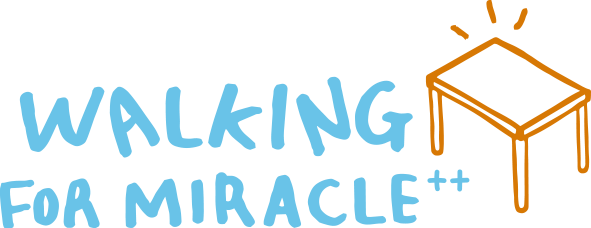

<!DOCTYPE html>
<html lang="en">

<head>
    <meta charset="UTF-8">
    <meta http-equiv="X-UA-Compatible" content="IE=edge">
    <meta name="viewport" content="width=device-width, initial-scale=1.0">
    <title>Walking For Miracle</title>
    <link rel="stylesheet" href="./css/reset.css">
    <link rel="stylesheet" href="./css/indexStyle.css">
</head>

<body>
    <div id="wrap">
        <header id="header">
            
        </header>

        <div id="container">
            <div class="inner">
                <section id="upper">
                    <p class="text">
                        2021년,<br>
                        올해 W4M 시즌 2는<br>
                        케냐, 레바논과 필리핀의 아이들의<br>
                        ‘공부하고 싶은 꿈’을 이루어 주기 위해<br>
                        책상을 보내주고 싶습니다.
                    </p>
                    <p class="text">
                        5만 보를 걸으면<br>
                        ‘꿈꾸는 책상’ 하나를<br>
                        선교지에 선물할 수 있습니다.<br>
                        혼자서 걷기 힘들다면<br>
                        가족이 함께 걷고,<br>
                        교회 식구들이 함께 걸으면서<br>
                        선교지에 ‘꿈꾸는 책상’을 보내줍시다.
                    </p>
                    <p class="text">
                        <span class="bold orange">‘Build up each other’</span><br>
                        아이들의 꿈을 이루어 주기 위해 걷고,<br>
                        케냐, 레바논 그리고 필리핀 아이들도 함께<br>
                        걸으며<br>
                        서로의 꿈을 응원할 수 있는 시간이 되길<br>
                        소망합니다.
                    </p>
                    <p class="image">
                        
                    </p>
                </section>

                <section id="offering">
                    <p class="text">
                        <span class="bold">어떻게 재정을 모으나요?</span>
                    </p>
                    <p class="text title_space">
                        시리아, 케냐, 필리핀 어린이들이<br>
                        재정을 모으지는 않습니다.<br>
                        선교지에 있는 어린이들은<br>
                        걷기만 하고<br>
                        보내는 재정은 모두<br>
                        한국 빛의교회가 준비할 거에요.
                    </p>
                    <p class="text">
                        우리는(빛의교회 식구들)<br>
                        자신이 걸은 걸음수만큼<br>
                        헌금해주시면 됩니다.<br>
                        우리 중에서도<br>
                        헌금을 하지 않고<br>
                        걷고 기도만 해주셔도 좋습니다.<br>
                        부족한 금액은<br>
                        빛의교회가 준비해서<br>
                        보내도록 하겠습니다.
                    </p>
                    <p class="text">
                        대신 가능한 빛의교회 식구들은<br>
                        자신들이 걸은 걸음 수만큼<br>
                        헌금을 보내주시면<br>
                        여러분들이 헌금해 주신 것에<br>
                        교회가 2배로 더해서<br>
                        책상과 함께<br>
                        각 나라에<br>
                        양식을 보내주도록 하겠습니다.
                    </p>
                    <p class="how_to_offering">
                        <span class="bold">[헌금하는 방법]</span><br>
                        입금계좌 : 신한은행 140-010-317409<br>
                        빛의교회 (선교)<br>
                        입금자명 : 홍길동w4m
                    </p>

                    <p class="comming_soon_text">
                        <MARQUEE scrollamount="10">공사중입니다!</MARQUEE>
                    </p>
                    
                    <!-- <div class="btn__wrap">
                        <a class="btn__participate" href="./pages/participate.html">참여하기</a>
                    </div> -->
                    <div class="btn__wrap">
                        <a class="btn__participate" href="./pages/gallary.html">테스트용입니다.</a>
                    </div>

                </section>

                <section id="lower">
                    <p class="text">
                        <span class="bold">What is<br>“Walking for Miracle” ?</span>
                    </p>
                    <p class="text title_space">
                        Walking for Miracle 은<br>
                        ‘코로나 19’로 직접 선교지를 방문하지<br>
                        못하는 상황에서 시작된<br>
                        걷기 무브먼트입니다.<br>
                        비록 선교 현장에 방문할 수는 없지만<br>
                        각자 삶의 자리에서<br>
                        걸으면서 기도하고,<br>
                        걸음 수만큼 재정을 나눠서<br>
                        선교지에 보내주는 것으로<br>
                        선교에 동참하게 됩니다.
                    </p>
                    <p class="text">
                        우리는
                        레바논(시리아 난민들)을 위해서<br>
                        걷고, 레바논 친구들은<br>
                        케냐의 마사이 어린이들을 위해서<br>
                        걷고, 케냐 마사이 어린이들은<br>
                        필리핀 산지족 교회 어린이를<br>
                        생각하면서 걷게 됩니다.
                    </p>
                    <p class="text">
                        코로나 19가 펜데믹이 되어<br>
                        모두가 고통받는 때에<br>
                        우리의 기도와 걸음으로<br>
                        세상을 하나로 연결하고<br>
                        세상을 회복하는<br>
                        아름다운 꿈을 꿉니다.
                    </p>
                    <p class="text">
                        <span class="bold">“Hope is faster than covid 19!”</span>
                    </p>
                </section>

                <section id="bottom">
                    
                </section>


            </div>
        </div>

        <footer id="footer">
            
        </footer>

    </div>
</body>

</html>